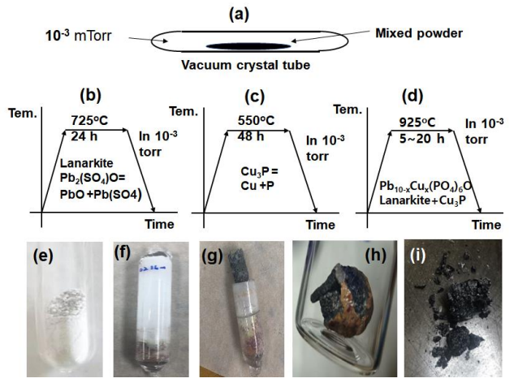
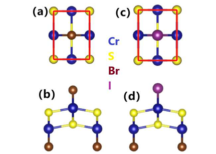
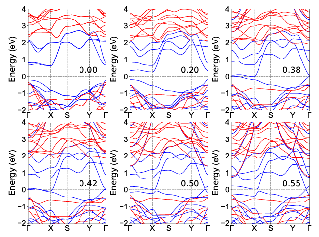

2023年8月
今月のまとめ
先月報告されたPb10-xCux(PO4)6Oに関する常温常圧超伝導に関する再試論文が多いが、とうとうNatureからLK-99は超伝導ではないという結論が得られたようだ。日本勢からは1本も論文が出ないのは、日本におけるアカデミアの余裕のなさが垣間見えるのか、ただ興味が薄いのか、それとも予め超伝導でないと見切りをつけていたのか。
8月に気になった論文一覧
- Pb10(PO4)6OにおけるCu/O挿入とキャリアドーピングによる金属状態
- 多元素合金の機械的性質予測のための原始的な機械学習ツール
- 弾性カロリック効果によるフェロ四極子金属TmAg2のネマティック感受性の測定
- 単層CrSBrにおける電場誘起ハーフメタル
ピックアップ論文
1. Pb10(PO4)6OにおけるCu/O挿入とキャリアドーピングによる金属状態
以下ChatGPTによる要約とコメントを記述
・銅/酸素挿入はPb10(PO4)6Oの熱力学的安定性、電気伝導性、磁気特性に影響を与えることを第一原理計算で示した。
・銅挿入はPb10(PO4)6Oをモット半導体に変え、銅イオンは1μBの磁気モーメントを持ち、銅-酸素鎖沿いに反強磁性結合を示す。さらなるキャリアドープにより、反強磁性結合は抑制され、銅-酸素鎖は導電性となる。
・銅-酸素鎖は一次元的な導電特性を示し、c軸方向の直流伝導率は他の方向よりも2桁以上大きい。リラクゼーション時間が10 fsと仮定すると、c軸方向の直流伝導率は約10^5 S/mとなり、銅や鉛よりも小さい。
・酸素挿入とさらなる銅置換もPb10(PO4)6Oの金属化を引き起こし、c軸方向の伝導率が他の方向よりも6倍大きい。酸素挿入と銅置換による交換結合は複雑で弱く、長距離磁気秩序を形成しない。
※ LK-99が常温超伝導じゃないのは残念だけど、盛り上がり自体は好き。
Metallic states in Pb10(PO4)6O induced by the Cu/O-insertions and carrier doping
Liang Liu, Xue Ren, Jifan Hu, 13 Aug 2023
arXiv:2308.07345 (cond-mat.supr-con)


2. 多元素合金の機械的性質予測のための原始的な機械学習ツール
・多元素合金（MPEA）の組成と6つの機械的性質（硬さ、降伏強度、引張強度、伸び、圧縮強度、塑性）を含むデータセットを作成した。
・MPEAの組成を機械学習モデルの入力ベクトルに変換するために、パーサーというツールを開発した。
・線形回帰、K近傍回帰、サポートベクター回帰、ランダムフォレスト回帰などのさまざまな機械学習モデルを適用して、MPEAの機械的性質を予測した。
・Gradioというライブラリを使って、機械学習モデルの予測結果を視覚化し、ユーザーと対話できるインターフェースを作成した。
※ マテインフォ系のGUIの優れたソフトが最近色々な特性解析に拡張しているような気がする。
A primitive machine learning tool for the mechanical property prediction of multiple principal element alloys
R. Tan, Z. Li, S. Zhao, N. Birbilis, 15 Aug 2023
arXiv:2308.07649v1 (cond-mat)


3. 弾性カロリック効果によるフェロ四極子金属TmAg2のネマティック感受性の測定
・TmAg2は、4f電子がフェロ四極子秩序を形成し、4回対称性を破る電子ネマティック相転移を5Kで起こす金属物質である。
・c軸に沿った磁場は、フェロ四極子秩序パラメータに対する有効な横場として機能し、相転移温度を3.2Tで完全に抑制する。
・弾性カロリック効果は、物質が経験するひずみによって誘起される温度変化を測定する技術であり、フェロ四極子-ひずみ感受性を直接探ることができる。
・弾性カロリック効果から得られたネマティック感受性は、弾性定数の測定と一致し、横場イジング模型によって定量的に説明される。
※ 弾性カロリック効果とフェロ四極子とc軸磁場の関係は興味深い
The nematic susceptibility of the ferroquadrupolar metal TmAg2 measured via the elastocaloric effect
Elliott W. Rosenberg, Matthias Ikeda, Ian R. Fisher, 10 Aug 2023
arXiv:2308.05312v1 (cond-mat)

4. 単層CrSBrにおける電場誘起ハーフメタル
・2層の磁性原子を持つ2次元（2D）強磁性（FM）材料に垂直電場をかけることで、ハーフメタル性（一方のスピンチャネルが金属で、もう一方が絶縁体または半導体である性質）を実現する新しいメカニズムを提案した。電場により、異なる層の電子バンドがずれることで、ハーフメタル性が誘起される。
・単層CrSBrは正方晶系の結晶構造を持ち、SとBr原子によって形成された歪んだ八面体配位にある2層のCr原子が磁性を持つ。第一原理計算により、CrSBrは電場なしではFM半導体であるが、適切な範囲の電場をかけるとFMハーフメタルになることを見出した。
・ハーフメタル性を誘起するために必要な電場強度は約0.4 V/Å程度であり、実験的に達成可能な値であることを示した。また、ハーフメタル性を定義するギャップは0.33 eV以上であり、スピン反転励起のエネルギーが十分に高いことを確認した。
・CrSBr単層を用いて、電場のオンオフによってデータ書き込みと読み出しを行う可能なスピントロニクスデバイスの概念図を示した。また、同じ構造とFM配位を持つ他の単層材料（VSF, VSeF, VSeBr, CrSCl, CrSI, CrSeBr, CrSeI）にも本研究の方法や分析が適用可能であることを指摘した。
※ ハーフメタル性を定義するギャップの閾値は0.33eVだったのか。これを電場誘起で発現させるのは興味深い。
Electric-field induced half-metal in monolayer CrSBr
Hao-Tian Guo, San-Dong Guo, Yee Sin Ang, 7 Aug 2023
arXiv:2308.03430v1 (cond-mat)
 
5. キラル磁気ソリトンの発見と制御：ランダウ・リフシッツ・ギルバート方程式の厳密解
・キラル磁気ソリトンとは、空間的に局在する孤立した波の一種で、スピンが360°回転する構造を持つ磁化構造のこと。
・ランダウ・リフシッツ・ギルバート方程式（LLG方程式）と一般化非線形シュレーディンガー方程式（GNLS方程式）との間に幾何学的な対応関係を見出し、LLG方程式を厳密に解くことができることを示した。
・ダルブー変換を用いて、等方性強磁性ナノワイヤー中に存在するキラル磁気ソリトンという新しい磁化構造の解析的な形式を導出した。キラル磁気ソリトンは、鏡像対称性と位相ジャンプを持ち、左巻き、右巻き、中立の三種類に分類できる。
・スピン偏極電流の注入によって、キラル磁気ソリトンの運動を任意に操作できることを理論的にも数値的にも確認した。電流の強度や方向に応じて、ソリトンの速度や進行方向を変えたり、停止させたりできる。
・ギルバート減衰の影響を考慮すると、キラル磁気ソリトンは伝播中にエネルギーを失って均一な磁化状態に崩壊することを示した。しかし、適切なスピン電流を加えることで、非断熱的なスピントルクが減衰効果に対抗して、ソリトンの長距離伝播を可能にすることができる。
※ この研究では、交換場だけを考慮してキラル磁気ソリトンを解析しているようだが、他の有効場や異方性、不均一性などの要素が加わった場合にどうなるのか興味あり。
DATE: 16 Aug 2023
Discovery and regulation of chiral magnetic solitons: Exact solution from Landau-Lifshitz-Gilbert equation
Xin-Wei Jin, Zhan-Ying Yang, Zhimin Liao, Guangyin Jing, Wen-Li Yang
arXiv:2308.08331 (cond-mat)

更新予定